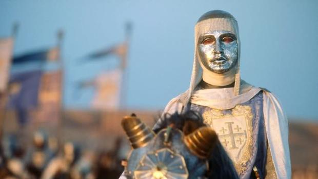

Balduino pasó su niñez y juventud en la corte de su padre en Jerusalén, con poco contacto con su madre, Inés de Courtenay, condesa de Jaffa y Ascalón (y posteriormente señora de Sidón), de la cual su padre se había visto obligado a divorciarse. Balduino IV fue educado por el historiador Guillermo de Tiro (que luego sería arzobispo de Tiro y canciller del reino), que descubrió que el niño padecía lepra: el niño y sus amigos estaban jugando un día a pincharse en los brazos, pero Balduino no sintió dolor cuando le pincharon, Guillermo reconoció el hecho inmediatamente como señal de la lepra.
Ese mismo año, Balduino alcanzó la mayoría de edad. Contaba con pocos familiares hombres en los que poder delegar. Inés ganó influencia y logró que su hermano Joscelino III de Edesa fuese nombrado senescal. En 1176 Reinaldo de Chatillon había sido liberado de su cautividad en Alepo, entonces Balduino le hizo señor de Kerak, una fortaleza sobre el mar Muerto. En 1177, Balduino permitió a su madrastra, la reina viuda María Comneno, que se casase con Balián de Ibelín. Era una alianza peligrosa, pues con el apoyo de María, la ambiciosa familia de Ibelín intentaría casarse con las princesas Sibila e Isabel. Durante ese año, Balduino obtuvo una gran victoria con Reinaldo de Châtillon a la cabeza del ejército de Jerusalén, Saladino invadió los campos del reino creyendo atacar un país sin defensores. Pero el joven rey Balduino IV reunió a todos los caballeros que le quedaban y se llevó la Vera Cruz. Primero fue a refugiarse a Ascalón con un ejército reclutado a toda prisa y con solo 350 caballeros entre sus filas, y luego los musulmanes fueron sorprendidos por la retaguardia, lo que provocó su derrota. Balduino había salvado su reino con la astucia y habilidad de un gran gobernante, por ello fue recibido triunfalmente en Jerusalén. Fue la última gran batalla ganada por los cruzados en Tierra Santa antes de la capitulación de Jerusalén, recordada como la batalla de Montgisard.
